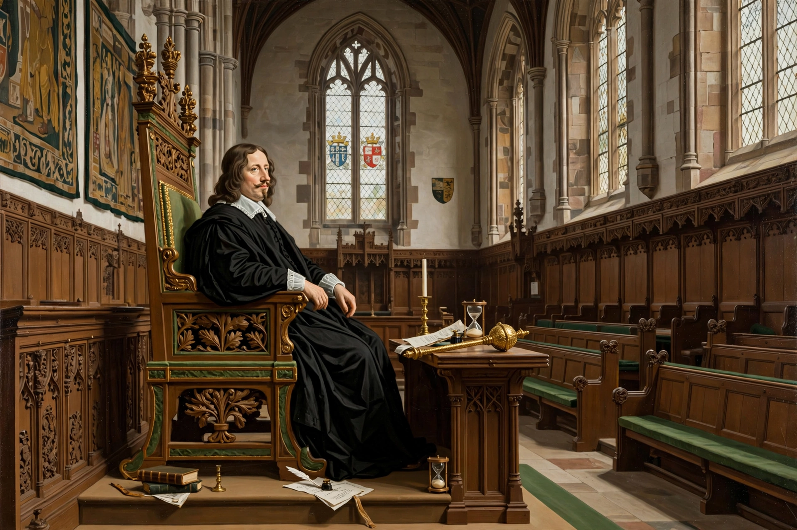

| William Lenthall | |
|---|---|
 William Lenthall as Speaker of the House of Commons | |
| Born | 1591, Henley-on-Thames, Oxfordshire, England |
| Died | 3 September 1662 (aged 70–71), Burford, Oxfordshire |
| Office | Speaker of the House of Commons |
| In office | 1640–1647; 1649–1653; 1654–1655; 1659–1660 |
| Education | St Alban Hall, Oxford; Lincoln's Inn |
| Occupation | Lawyer, politician |
William Lenthall (1591 – 3 September 1662) was an English lawyer and politician who sat in the House of Commons at various times between 1624 and 1660. He is best known as Speaker of the House of Commons during the Long Parliament, the English Civil War, and much of the Interregnum—a period in which he presided over some of the most dramatic confrontations between Parliament and Crown in English history.
Lenthall was born at Henley-on-Thames in Oxfordshire, the son of a lawyer. He was educated at St Alban Hall, Oxford, and called to the bar at Lincoln's Inn in 1616. He built a successful legal practice and served as Recorder of Woodstock and of Gloucester.
Lenthall became Speaker when the Long Parliament met in November 1640. His most famous moment came on 4 January 1642, when Charles I entered the Commons chamber with armed men to arrest five members accused of treason. Asked whether the members were present, Lenthall fell to his knee and replied: "May it please your Majesty, I have neither eyes to see nor tongue to speak in this place but as the House is pleased to direct me, whose servant I am here." The answer is regarded as a foundational assertion of parliamentary privilege and the independence of the Speaker from the Crown.
Lenthall presided over the Commons through the Civil War, the trial and execution of Charles I, and the Rump Parliament. He was retained as Speaker under the Commonwealth and the Protectorate, though Oliver Cromwell dissolved assemblies he chaired more than once. He sat in the Convention Parliament of 1660, which restored Charles II, and was briefly imprisoned after the Restoration before being pardoned.
Lenthall died at Burford in 1662 and was buried there. His defence of the Commons' privileges in 1642 remains a defining episode in the history of the Speakership; the words he used are still cited as the Speaker's constitutional position.
Speaker of the House of Commons · Long Parliament · Charles I · English Civil War